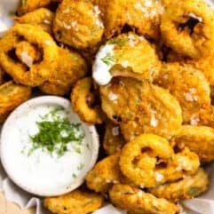

Deep Fried Pickles

Fried Pickles
Perfect salty, fried snack! Don't forget the ranch!
Ingredients
- 1 cup all purpose flour
- 1/2 tsp salt
- 1/4 tsp ground black pepper
- 3/4 tsp garlic powder
- 1/2 tsp paprika
- 1/2 cup buttermilk
- 1 large egg
- cooking oil, vegetable or canola oil
- 16 ounces dill pickle chips
Steps
- Fill a large heavy bottom pot with 2 inches of cooking oil. Heat over medium heat until oil reaches 375℉.
- In medium bowl combine the flour, salt, pepper, garlic powder, and paprika. Whisk together. Set aside
- In separate medium bowl beat the egg and add the buttermilk.
- Drain the pickles and lay on paper towels or clean towels. Pat dry. If using whole pickles, slice the pickles to ¼ inch thick. Pat dry.
- Working in batches of 6-7 add pickles to the flour coating both sides. Tap off excess flour. Then dip into the egg mixture coating both sides. Then dip back into the flour to coat the pickles. Tap to remove excess and place battered pickles on a large baking sheet. Continue until all pickles are battered.
- Check the temperature of the oil to ensure it has reached 375℉. Working in batches add 6-7 pickles into the oil carefully using tongs or a skimmer. Cook for about 1.5-2 minutes. Remove once golden brown on both sides. Place onto a large baking sheet that is covered with a paper towel.
- Repeat the process until all pickles are fried! Serve with ranch or other dipping sauce of choice and enjoy!